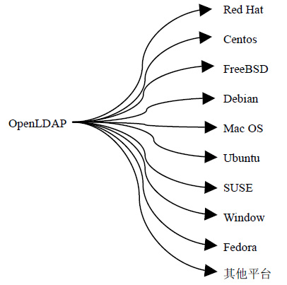
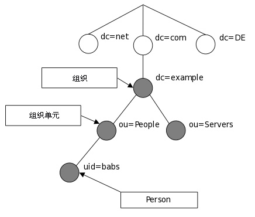
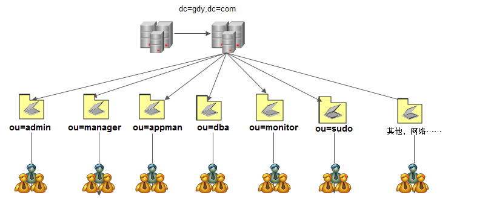
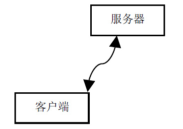
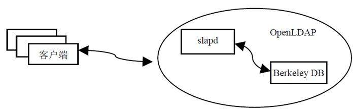

首页 > 编程笔记
OpenLDAP到底是什么？
OpenLDAP 是目前用于实现账号集中管理的开源软件，可以让账号管理人员、系统运维工程师的工作变得灵活轻松，提高工作效率，并且通过一台机器控制上千台机器账号权限的管理，如添加、删除、修改等操作。
登录过程中发现大量以 root 超级用户进行登录，无论是测试环境还是生产环境，为了保障系统、应用服务安全，都不建议以 root 身份登录系统进行操作。
通过服务器列表发现大部分密码设置过于简单，极其容易被攻击者所破解。同时用户权限没有得到灵活控制，大部分普通用户具有 root 权限，这在维护中增加了系统潜在操作的风险。
当系统、应用出现异常时，通过服务器列表提供的地址、账号和密码无法登录系统，只好通过离职人员获取账号和密码进行故障处理，处理时效大大延迟，且账号安全无法得到保障。
从以上案例解读，读者不难发现账号管理存在如下问题：
为了规避以上问题存在的风险点及维护管理带来的异常，一般可以通过商业化软件以及开源软件实现账号集中管理。由于商业化软件价格昂贵，此时通过开源集中账号管理（OpenLDAP）软件是不错的选择，且它功能强大、灵活性强、架构成熟，其中的权限控制、访问控制、主机权限策略、密码审计、同步机制以及通过第三方开源工具实现负载高可用等，提供一整套安全的账号统一管理机制。
用户通过集中认证管理平台实现身份、权限的验证，获得服务器授权之后登录系统及应用管理平台，此时用户可自我维护账号、密码，且无须管理员干涉密码修改，实现用户账号自身安全性。
用户通过验证服务器获取主机登录策略，获取 OpenLDAP 服务器的授权，从而实现用户登录主机的灵活控制。
LDAP 具有两个国家标准，分别是 X.500 和 LDAP。OpenLDAP 是基于 X.500 标准的，而且去除了 X.500 复杂的功能并且可以根据自我需求定制额外扩展功能，但与 X.500 也有不同之处，例如 OpenLDAP 支持 TCP/IP 协议等，目前 TCP/IP 是 Internet 上访问互联网的协议。
OpenLDAP 则直接运行在更简单和更通用的 TCP/IP 或其他可靠的传输协议层上，避免了在 OSI 会话层和表示层的开销，使连接的建立和包的处理更简单、更快，对于互联网和企业网应用更理想。
LDAP 提供并实现目录服务的信息服务，目录服务是一种特殊的数据库系统，对于数据的读取、浏览、搜索有很好的效果。目录服务一般用来包含基于属性的描述性信息并支持精细复杂的过滤功能，但 OpenLDAP 目录服务不支持通用数据库的大量更新操作所需要的复杂的事务管理或回滚策略等。
OpenLDAP 默认以 Berkeley DB 作为后端数据库，Berkeley DB 数据库主要以散列的数据类型进行数据存储，如以键值对的方式进行存储。
Berkeley DB 是一类特殊的数据库，主要用于搜索、浏览、更新查询操作，一般对于一次写入数据、多次查询和搜索有很好的效果。Berkeley DB 数据库是面向查询进行优化，面向读取进行优化的数据库。Berkeley DB 不支持事务型数据库（MySQL、MariDB、Oracle等）所支持的高并发的吞吐量以及复杂的事务操作。
OpenLDAP 目录中的信息是按照树形结构进行组织的，具体信息存储在条目（entry）中，条目可以看成关系数据库中的表记录。
条目是具有区别名（Distinguished Name，DN）的属性（attribute），DN 是用来引用条目，DN 相当于关系数据库（Oracle/MySQL）中的主键（primary key），是唯一的。属性由类型（type）和一个或者多个值（value）组成，相当于关系数据库中字段的概念。
如果多个用户登录系统，就需要在每个系统上创建用户名和密码；否则，就无法登录系统。
对于账号管理人员而言，维护 10 台、100 台机器的账号，或许勉强可以维护、管理。如果机器数量达到 1000 以上时，对于账号的创建、回收、权限的分配、密码策略、账号安全审计等一系列操作，账号管理人员就心有余而力不足了，此时 OpenLDAP 账号集中管理软件就应用而生。
OpenLDAP 可以实现账号集中维护、管理，只需要将被管理的机器加入到服务器端即可，此后所有与账号相关的策略均在服务端实现，从而解决了运维案例所产生的众多管理问题。
关于账号的添加、删除、修改、权限的赋予等一系列操作只需要在服务端操作即可，无须在客户端机器进行单独操作。客户端账号及密码均通过 OpenLDAP 服务器进行验证，从而实现账号集中认证管理，此时账号管理员只须维护 OpenLDAP 服务器条目即可。
OpenLDAP 属于开源软件，且 OpenLDAP 支持 LDAP 最新标准、更多模块扩展功能、自定义 schema 满足需求、权限管理、密码策略及审计管理、主机控制策略管理、第三方应用平台管理以及与第三方开源软件结合实现高可用负载均衡平台等诸多功能，这也是商业化管理软件无可比拟的。
关于账号的管理，OpenLDAP 基本是企业唯一的选择，目前各大著名公司都在使用 OpenLDAP 实现账号的集中管理，如 PPTv、金山、Google、Facebook 等，这也是选择 OpenLDAP 实现账号统一管理的原因之一。
每一款产品无论是商业软件还是开源软件，都有它们的应用场景。本文主要讲解以开源方式实现账号统一管理的软件 OpenLDAP 在 UNIX/Linux 主机上的应用场景及企业应用实例。对于其他 LDAP 产品，读者可以通过搜索引擎进行了解，在此不作过多阐述。
OpenLDAP 适用于少则一台机器，多则千台机器的系统，可实现账号集中式统一管理。
通过图1可以了解到，OpenLDAP 支持众多系统平台，例如各种 UNIX 发行版本、微软 Windows、Mac OS、IBM AIX 等众多平台。
一个组织单元可以包含员工、设备信息（计算机/打印机等）相关信息。例如 uid=babs，ou=People，dc=example，dc=com，如图2所示。
OpenLDAP 通过配置服务器和客户端，实现账号的管理，并通过与第三方应用相结合，实现客户端所有账号均可通过服务端进行验证，例如 Samba、Apache、Zabbix、FTP、Postfix、EMC 存储以及系统登录验证并授权。
OpenLDAP 工作模型解释如下：
OpenLDAP 官网：https://www.openldap.org/
先看一个案例
系统运维人员入职新公司后，运维经理将维护的服务器列表、账号、密码、远程管理卡等相关信息进行交付。运维人员通过地址、用户名以及密码了解设备应用环境配置信息，此时通过机器列表、账号和密码尝试登录系统，发现大部分机器无法登录。登录过程中发现大量以 root 超级用户进行登录，无论是测试环境还是生产环境，为了保障系统、应用服务安全，都不建议以 root 身份登录系统进行操作。
通过服务器列表发现大部分密码设置过于简单，极其容易被攻击者所破解。同时用户权限没有得到灵活控制，大部分普通用户具有 root 权限，这在维护中增加了系统潜在操作的风险。
当系统、应用出现异常时，通过服务器列表提供的地址、账号和密码无法登录系统，只好通过离职人员获取账号和密码进行故障处理，处理时效大大延迟，且账号安全无法得到保障。
从以上案例解读，读者不难发现账号管理存在如下问题：
- 系统账号身份无法集中管理；
- 系统账号权限无法集中控制；
- 系统账号授权无法集中管理；
- 系统账号审计无法集中管理；
- 系统账号密码策略无法集中控制。
为了规避以上问题存在的风险点及维护管理带来的异常，一般可以通过商业化软件以及开源软件实现账号集中管理。由于商业化软件价格昂贵，此时通过开源集中账号管理（OpenLDAP）软件是不错的选择，且它功能强大、灵活性强、架构成熟，其中的权限控制、访问控制、主机权限策略、密码审计、同步机制以及通过第三方开源工具实现负载高可用等，提供一整套安全的账号统一管理机制。
用户通过集中认证管理平台实现身份、权限的验证，获得服务器授权之后登录系统及应用管理平台，此时用户可自我维护账号、密码，且无须管理员干涉密码修改，实现用户账号自身安全性。
用户通过验证服务器获取主机登录策略，获取 OpenLDAP 服务器的授权，从而实现用户登录主机的灵活控制。
OpenLDAP 是什么？
OpenLDAP 是一款轻量级目录访问协议（Lightweight Directory Access Protocol，LDAP），属于开源集中账号管理架构的实现，且支持众多系统版本，被广大互联网公司所采用。LDAP 具有两个国家标准，分别是 X.500 和 LDAP。OpenLDAP 是基于 X.500 标准的，而且去除了 X.500 复杂的功能并且可以根据自我需求定制额外扩展功能，但与 X.500 也有不同之处，例如 OpenLDAP 支持 TCP/IP 协议等，目前 TCP/IP 是 Internet 上访问互联网的协议。
OpenLDAP 则直接运行在更简单和更通用的 TCP/IP 或其他可靠的传输协议层上，避免了在 OSI 会话层和表示层的开销，使连接的建立和包的处理更简单、更快，对于互联网和企业网应用更理想。
LDAP 提供并实现目录服务的信息服务，目录服务是一种特殊的数据库系统，对于数据的读取、浏览、搜索有很好的效果。目录服务一般用来包含基于属性的描述性信息并支持精细复杂的过滤功能，但 OpenLDAP 目录服务不支持通用数据库的大量更新操作所需要的复杂的事务管理或回滚策略等。
OpenLDAP 默认以 Berkeley DB 作为后端数据库，Berkeley DB 数据库主要以散列的数据类型进行数据存储，如以键值对的方式进行存储。
Berkeley DB 是一类特殊的数据库，主要用于搜索、浏览、更新查询操作，一般对于一次写入数据、多次查询和搜索有很好的效果。Berkeley DB 数据库是面向查询进行优化，面向读取进行优化的数据库。Berkeley DB 不支持事务型数据库（MySQL、MariDB、Oracle等）所支持的高并发的吞吐量以及复杂的事务操作。
OpenLDAP 目录中的信息是按照树形结构进行组织的，具体信息存储在条目（entry）中，条目可以看成关系数据库中的表记录。
条目是具有区别名（Distinguished Name，DN）的属性（attribute），DN 是用来引用条目，DN 相当于关系数据库（Oracle/MySQL）中的主键（primary key），是唯一的。属性由类型（type）和一个或者多个值（value）组成，相当于关系数据库中字段的概念。
为什么选择OpenLDAP产品
我们知道，账号是登录系统的唯一入口。要登录系统，首先系统要存在登录所使用的账号（/etc/passwd）及密码信息（/etc/shadow），然后经过系统查找顺序（/etc/nsswith.conf）及认证模块（/etc/pam.d/ *）验证，得到授权后方可登录系统。如果多个用户登录系统，就需要在每个系统上创建用户名和密码；否则，就无法登录系统。
对于账号管理人员而言，维护 10 台、100 台机器的账号，或许勉强可以维护、管理。如果机器数量达到 1000 以上时，对于账号的创建、回收、权限的分配、密码策略、账号安全审计等一系列操作，账号管理人员就心有余而力不足了，此时 OpenLDAP 账号集中管理软件就应用而生。
OpenLDAP 可以实现账号集中维护、管理，只需要将被管理的机器加入到服务器端即可，此后所有与账号相关的策略均在服务端实现，从而解决了运维案例所产生的众多管理问题。
关于账号的添加、删除、修改、权限的赋予等一系列操作只需要在服务端操作即可，无须在客户端机器进行单独操作。客户端账号及密码均通过 OpenLDAP 服务器进行验证，从而实现账号集中认证管理，此时账号管理员只须维护 OpenLDAP 服务器条目即可。
OpenLDAP 属于开源软件，且 OpenLDAP 支持 LDAP 最新标准、更多模块扩展功能、自定义 schema 满足需求、权限管理、密码策略及审计管理、主机控制策略管理、第三方应用平台管理以及与第三方开源软件结合实现高可用负载均衡平台等诸多功能，这也是商业化管理软件无可比拟的。
关于账号的管理，OpenLDAP 基本是企业唯一的选择，目前各大著名公司都在使用 OpenLDAP 实现账号的集中管理，如 PPTv、金山、Google、Facebook 等，这也是选择 OpenLDAP 实现账号统一管理的原因之一。
OpenLDAP目录服务优点
OpenLDAP 目录服务有以下 10 个优点：- OpenLDAP 是一个跨平台的标准互联网协议，它基于 X.500 标准协议。
- OpenLDAP 提供静态数据查询搜索，不需要像在关系数据中那样通过 SQL 语句维护数据库信息。
- OpenLDAP 基于推和拉的机制实现节点间数据同步，简称复制（replication）并提供基于 TLS、SASL 的安全认证机制，实现数据加密传输以及 Kerberos 密码验证功能。
- OpenLDAP 可以基于第三方开源软件实现负载（LVS、HAProxy）及高可用性解决方案，24 小时提供验证服务，如 Headbeat、Corosync、Keepalived 等。
- OpenLDAP 数据元素使用简单的文本字符串（简称 LDIF 文件）而非一些特殊字符，便于维护管理目录树条目。
- OpenLDAP 可以实现用户的集中认证管理，所有关于账号的变更，只须在 OpenLDAP 服务器端直接操作，无须到每台客户端进行操作，影响范围为全局。
- OpenLDAP 默认使用协议简单如支持 TCP/IP 协议传输条目数据，通过使用查找操作实现对目录树条目信息的读写操作，同样可以通过加密的方式进行获取目录树条目信息。
- OpenLDAP 产品应用于各大应用平台（Nginx、HTTP、vsftpd、Samba、SVN、Postfix、OpenStack、Hadoop等）、服务器（HP、IBM、Dell等）以及存储（EMC、NetApp等）控制台，负责管理账号验证功能，实现账号统一管理。
- OpenLDAP 实现具有费用低、配置简单、功能强大、管理容易及开源的特点。
- OpenLDAP 通过 ACL（Access Control List）灵活控制用户访问数据的权限，从而保证数据的安全性。
OpenLDAP功能
在 LDAP 的功能模型中定义了一系列利用 LDAP 协议的操作，主要包含以下4部分。1) 查询操作（ldapsearch）
允许查询目录并取得条目，其查询性能比关系数据库好。2) 更新操作（ldapupdate）
目录树条目支持条目的添加、删除、修改等操作。3) 同步操作
OpenLDAP 是一种典型的分布式结构，提供复制同步，可将主服务器上的数据通过推或拉的机制实现在从服务器上更新，完成数据的同步，从而避免 OpenLDAP 服务器出现单点故障，影响用户验证。4) 认证和管理操作
允许客户端在目录中识别自己，并且能够控制一个会话的性质。OpenLDAP协议版本概述
目前 OpenLDAP 2.4 版本使用 V2 和 V3 两个版本，其 V3 特点如下所示：- RFC 2251：LDAP V3 核心协议，定义 LDAP V3 协议的基本模型和基本操作。
- RFC 2252：定义 LDAPV3 中的基本数据模式（schema）来保证数据的存取规范。
- RFC 2253：定义 LDAP V3 中的区别名（DN）表达方式。
- RFC 2254：定义 LDAP V3 中的过滤器的表达方式。
- RFC 2255：LDAP 统一资源地址的格式。
- RFC 2256：在 LDAP V3 中使用 X.500 的 Schema 列表。
- RFC 2820：LDAP 通过访问控制列表来控制目录的访问权限。
- RFC 2829：定义 LDAP V3 中的认证方式。
- RFC 2830：定义如何通过扩展使用 TLS 服务。
- RFC 2847：定义 LDAP 数据导入、导出文件接口 LDIF。
LDAP产品汇总
LDAP 账号集中管理产品汇总见表1。| 厂商 | 产品名称 | 产品特点 |
|---|---|---|
| SUN | SUNONE Directory Server | 基于文本数据库的存储，速度快 |
| IBM | IBM Directory Server | 基于DB2的数据库存储，速度一般 |
| Oracle | Oracle Internet Directory | 基于Oracle的数据库，速度一般 |
| Microsoft | Microsoft Active Directory | 基于Windows系统用户，数据管理/权限不灵活 |
| Opensource | Opensource OpenLDAP | 开源项目、速度快、应用广泛 |
每一款产品无论是商业软件还是开源软件，都有它们的应用场景。本文主要讲解以开源方式实现账号统一管理的软件 OpenLDAP 在 UNIX/Linux 主机上的应用场景及企业应用实例。对于其他 LDAP 产品，读者可以通过搜索引擎进行了解，在此不作过多阐述。
OpenLDAP适用场景
OpenLDAP 账号管理软件适用于所有不同发行版的 UNIX 系统、Windows 系统以及各种应用平台的用户管理，如 Apache、Nginx、Zabbix、Postfix、Samba、FTP、SVN、Openvpn、Git、Hadoop、OpenStack 以及存储设备控制台等。OpenLDAP 适用于少则一台机器，多则千台机器的系统，可实现账号集中式统一管理。
OpenLDAP支持的系统平台
OpenLDAP 支持的系统平台如图1所示。

图1：OpenLDAP 支持的系统平台
图1：OpenLDAP 支持的系统平台
通过图1可以了解到，OpenLDAP 支持众多系统平台，例如各种 UNIX 发行版本、微软 Windows、Mac OS、IBM AIX 等众多平台。
OpenLDAP高级功能汇总
OpenLDAP 具有下述高级功能。- 实现账号统一集中管理
- 权限控制管理（sudo）
- 密码控制策略管理
- 密码审计管理
- 密码控制策略
- 主机控制管理
- 同步机制管理
- TLS/SASL 加密传输
- 高可用负载均衡架构
- 自定义 schema
- 各种应用平台集成账号管理
OpenLDAP目录架构
目前 OpenLDAP 目录架构分为两种：一种为互联网命名组织架构，另一种为企业级命名组织架构。本文分别为介绍两种架构的用途。1) 互联网命名组织架构
LDAP 的目录信息是以树形结构进行存储的，在树根一般定义国家（c=CN）或者域名（dc=com），其次往往定义一个或多个组织（organization，o）或组织单元（organization unit，ou）。一个组织单元可以包含员工、设备信息（计算机/打印机等）相关信息。例如 uid=babs，ou=People，dc=example，dc=com，如图2所示。

图2：LDAP互联网命名组织架
图2：LDAP互联网命名组织架
2) 企业级命名组织架构
企业级命名组织架构的示例如图3所示。

图3：LDAP 企业规划命名方式
图3：LDAP 企业规划命名方式
OpenLDAP的系统架构
OpenLDAP 目前是一款开源账号集中管理软件，且属于 C/S 架构（见图4）。OpenLDAP 通过配置服务器和客户端，实现账号的管理，并通过与第三方应用相结合，实现客户端所有账号均可通过服务端进行验证，例如 Samba、Apache、Zabbix、FTP、Postfix、EMC 存储以及系统登录验证并授权。

图4：OpenLDAP 的 C/S 架构
图4：OpenLDAP 的 C/S 架构
OpenLDAP的工作模型
OpenLDAP的工作模型如图5所示。

图5：OpenLDAP的工作模型
图5：OpenLDAP的工作模型
OpenLDAP 工作模型解释如下：
- 客户端向 OpenLDAP 服务器发起验证请求；
- 服务器接收用户请求后，并通过 slapd 进程向后端的数据库进行查询；
- slapd 将查询的结果返回给客户端即可。如果有缓存机制，服务器端会先将查询的条目进行缓存，然后再发给客户端。
关注公众号「站长严长生」，在手机上阅读所有教程，随时随地都能学习。内含一款搜索神器，免费下载全网书籍和视频。

微信扫码关注公众号